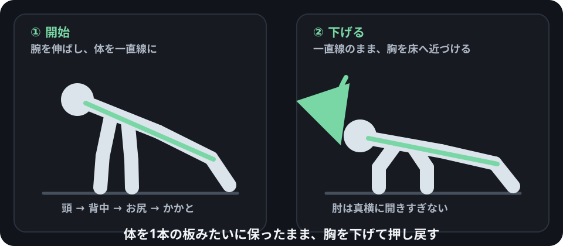
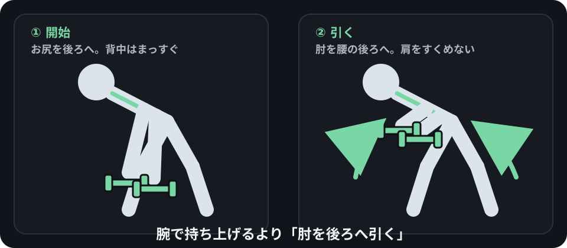
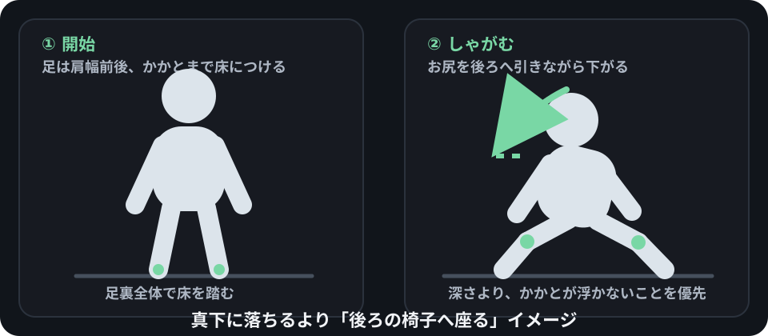
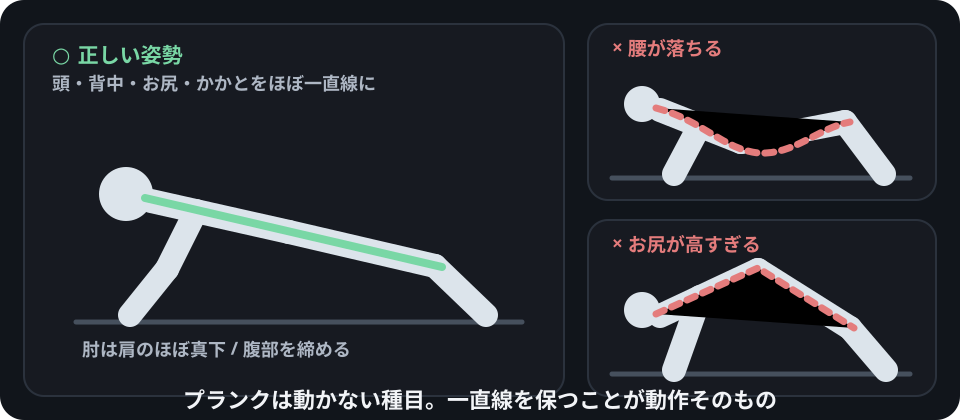

腕立て伏せ
胸 / 6〜15回 × 2〜3。体を一直線に保ち、肘を真横へ開きすぎない。
自宅筋トレ図鑑
自重・3kgダンベル2個・安定した椅子でできる18種目を、胸 / 背中 / 肩 / 腕 / 腹 / 脚から探せます。
Exercise Library
一覧は必要な情報だけに絞り、詳しい手順・呼吸・間違い・痛み・進め方は種目を開いて確認します。
読み込み中…
ページを再読み込みしてください。下の「JSなしでも確認できる基本4種目」と安全情報はそのまま読めます。
部位・器具・難易度を減らすか、検索語を短くしてください。
Data読み込みが失敗しても、最低限のフォームと回数へ到達できます。

胸 / 6〜15回 × 2〜3。体を一直線に保ち、肘を真横へ開きすぎない。

背中 / 12〜25回 × 2〜3。背中を丸めず、肘を腰の後ろへ引く。

脚 / 10〜20回 × 2〜3。足裏全体で床を踏み、膝とつま先の向きをそろえる。

腹 / 20〜40秒 × 2〜3。秒数より、頭からかかとまでの一直線を優先する。
筋トレ基礎
Rep、Set、休憩、頻度、3kgが軽いとき、筋肉痛、Failure、Progressionまで初心者向けに整理しています。
基礎知識を読み込み中…
メニュー例
記録管理Appにはせず、「今日は何を組み合わせるか」で迷ったときの例だけ置きます。
各2セット。最初は全部3セットにしなくて構いません。
肩・腕が疲れている日は種目数を減らします。
ブルガリアンは自重で安定してから3kgを追加します。
1〜2周。短時間でもフォームを急がないことを優先します。
安全 / 注意
このサイトは一般的な運動ガイドです。体調・既往・けがなどで運動が適切か分からない場合は、医療・運動の専門家へ確認してください。
筋肉の張り・熱さ・重さは起こりえます。関節の鋭い痛み、しびれ、強い腫れは「効いている」と扱わず中止します。
ダンベルの持ち手・固定部・割れ・危険な錆を確認します。不安定なダンベルは使いません。
ぐらつかず、床の上で動かない安定した椅子だけを使います。ブルガリアンスクワット等では特に椅子の安定を優先します。
発熱、強いだるさ、めまいなど普段と違う体調不良がある日は無理に予定を消化しません。
強い症状、長引く痛み、日常動作に支障がある場合は、自己判断で負荷を上げず医療機関へ相談します。
目標回数へ届かなくても問題ありません。反動や関節の痛みを使って回数だけを達成しないようにします。
参考情報
種目図は初心者が動作方向を理解するための説明用で、医学的な関節角度を厳密に再現するものではありません。一般的な筋力トレーニングの頻度・フォーム・痛みへの対応は、公的ガイドラインや医療機関の一般向け情報を参考にしています。